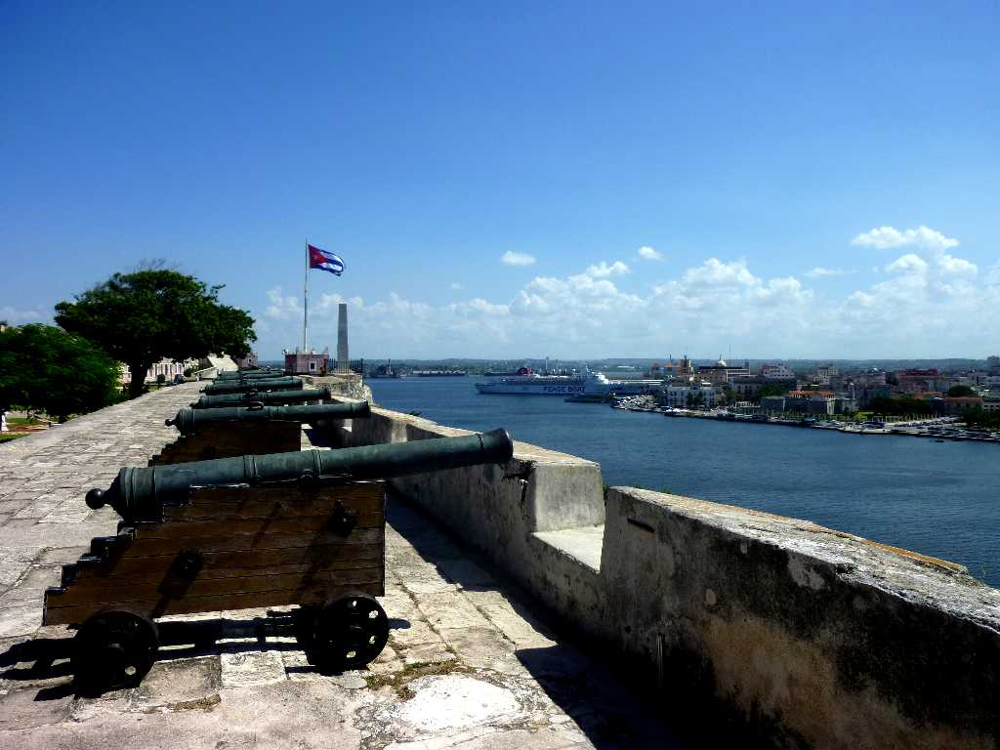
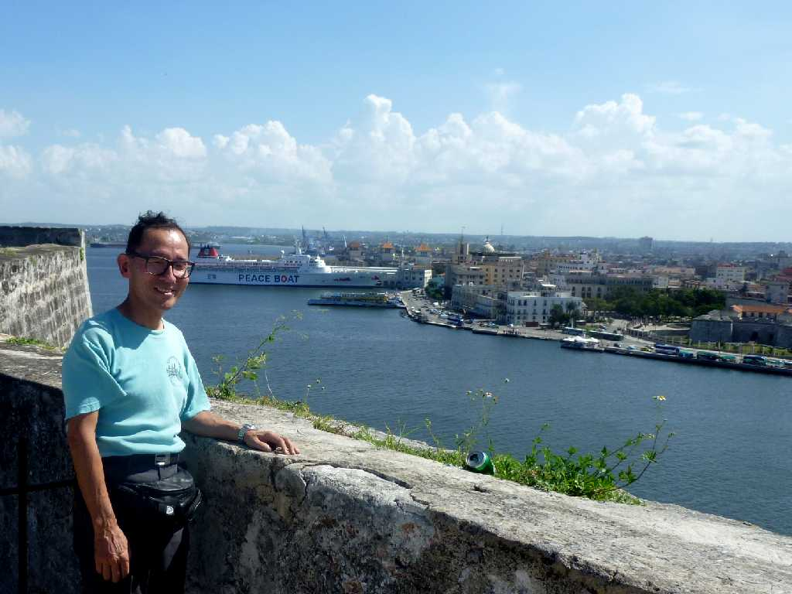
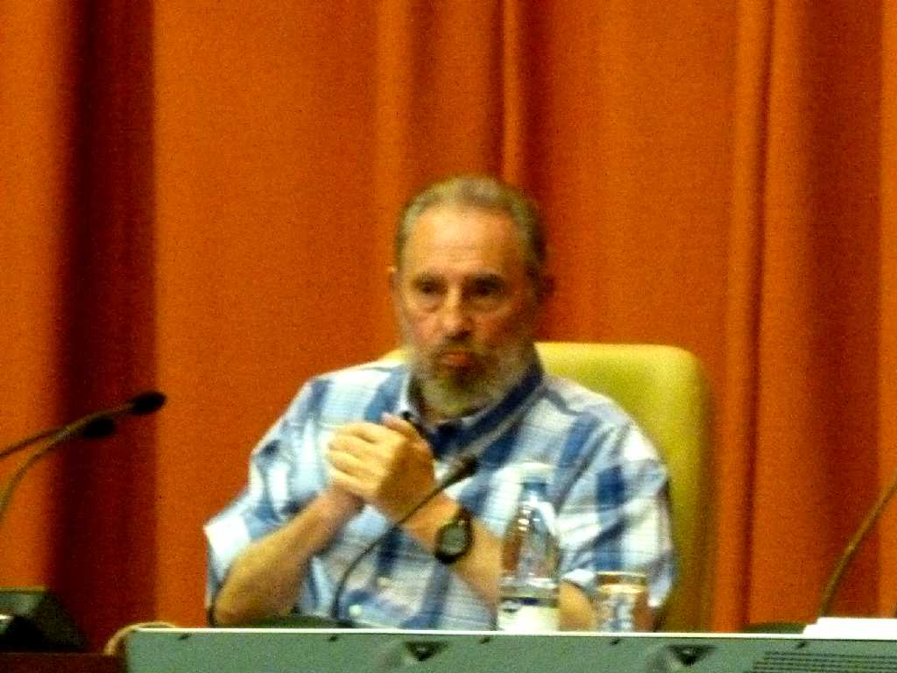
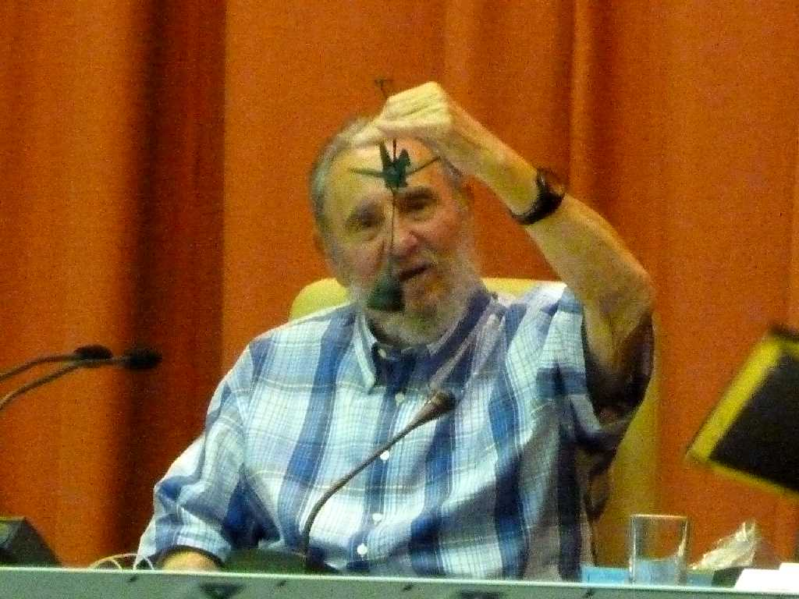
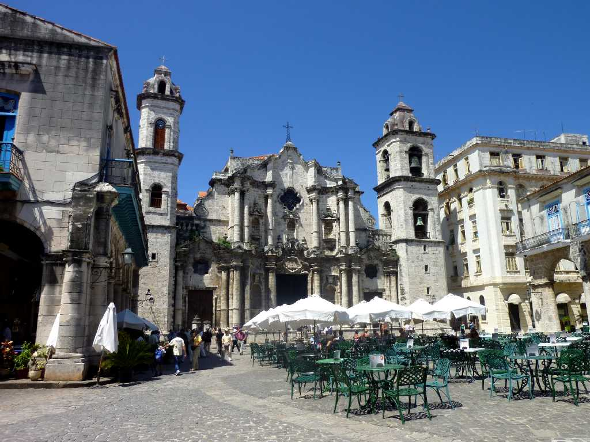
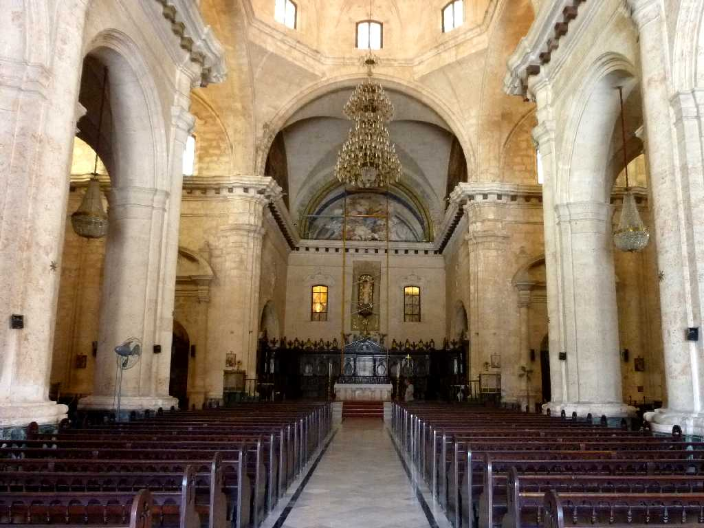
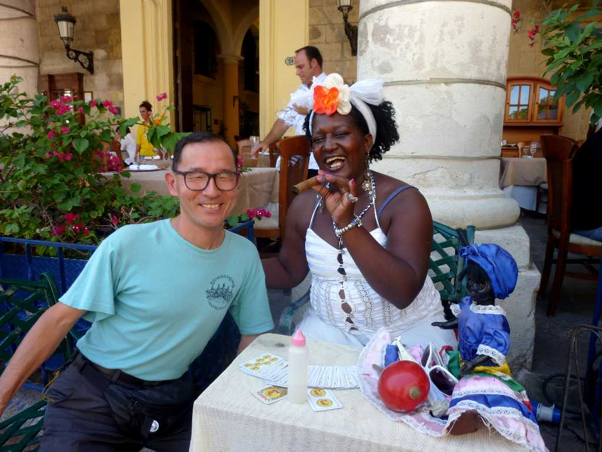
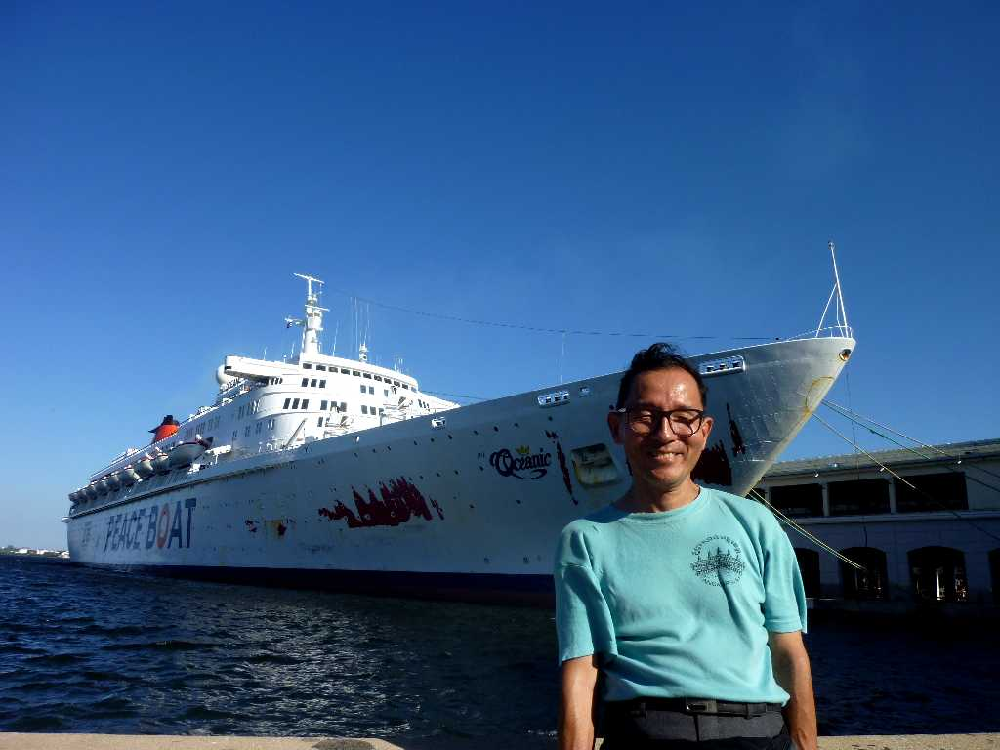

Habana
１５１９年スペインの新大陸の植民地経営の中心地として港を中心に創られ貿易の中継基地として栄えた

September 21 2010 Old Habana SS Oceanic
モロ要塞からハバナ旧市街とハバナ港に碇泊した SS Oceanic を望む
 
September 21 2010 Fidel Castro in Parliament Habana
議長府国会議事堂においてわが国との平和交流会で核兵器廃絶とイスラエルのイラン攻撃に反論する演説を行うフィデルカストロ前国家評議会議長 日本からの折鶴付の風鈴を受け取るComandanteと呼ばれているカストロ前議長

Catedral de San Cristobal Habana
１７７７年に創られコロンブスの遺体がセビリア大聖堂に運ばれる１８９８年まで安置されていたハバナ大聖堂

Altar Catedral de San Cristobal

September 21 2010 Plaza de la Catedral

September 21 2010 Habana Port
カナリア諸島からハバナ港に着岸するまで２つのハリケーンの間を避けながら航行したため船体の塗装がはげてしまった厳しい大西洋横断の航海でした